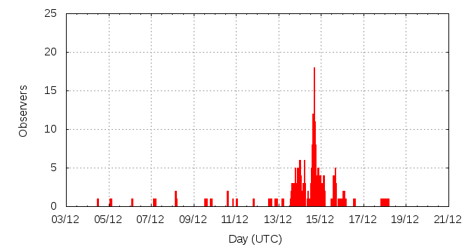

[ www.imo.net ]
This page shows automated results of the Geminids 2011, based on visual observations by volunteers astronomers collected through the report form of the International Meteor Organization (IMO). The information on this page is generated automatically; for scientific use please refer to manual analyses published in scientific journals (such as WGN). Send your feedback regarding this page to Geert Barentsen.
Page contents:
Note that the data will finally go into the Visual Meteor Database (VMDB) with manual inspection and rectifications. We are curretly completing the files of 2008-2011. The VMDB is an enormous project - any help will be greatly appreciated.
Page generated: 2012 January 18 at 15:16 UTC.
The graph below shows the ZHR (Zenithal Hourly Rate), which is the number of meteors an observer would see under a very dark sky with the radiant of the shower in zenith.
ZHRmax = 198 based on 1475 Geminids reported in 212 intervals, assuming population index r = 2.6

| Time (UTC) | Solarlon | nINT | nGEM | ZHR | Particle density | |
|---|---|---|---|---|---|---|
| 2011-12-05 06:05 | 252.576 | 3 | 4 | 3 | ±1 | 14 / 109·km3 |
| 2011-12-07 19:01 | 255.152 | 5 | 6 | 3 | ±1 | 14 / 109·km3 |
| 2011-12-10 14:39 | 258.014 | 3 | 5 | 22 | ±9 | 101 / 109·km3 |
| 2011-12-13 04:59 | 260.653 | 4 | 41 | 67 | ±10 | 306 / 109·km3 |
| 2011-12-13 22:59 | 261.416 | 14 | 55 | 72 | ±10 | 329 / 109·km3 |
| 2011-12-14 00:52 | 261.495 | 20 | 90 | 74 | ±8 | 338 / 109·km3 |
| 2011-12-14 04:30 | 261.649 | 18 | 130 | 98 | ±9 | 448 / 109·km3 |
| 2011-12-14 12:16 | 261.978 | 7 | 51 | 129 | ±18 | 590 / 109·km3 |
| 2011-12-14 14:47 | 262.085 | 26 | 222 | 198 | ±13 | 905 / 109·km3 |
| 2011-12-14 17:08 | 262.184 | 34 | 330 | 171 | ±9 | 782 / 109·km3 |
| 2011-12-14 20:34 | 262.330 | 14 | 117 | 160 | ±15 | 731 / 109·km3 |
| 2011-12-14 23:18 | 262.445 | 19 | 202 | 103 | ±7 | 471 / 109·km3 |
| 2011-12-15 02:42 | 262.589 | 14 | 124 | 148 | ±13 | 677 / 109·km3 |
| 2011-12-15 17:38 | 263.222 | 22 | 54 | 24 | ±3 | 110 / 109·km3 |
| 2011-12-17 12:57 | 265.058 | 8 | 41 | 10 | ±2 | 46 / 109·km3 |
| 2011-12-18 03:40 | 265.682 | 1 | 3 | 10 | ±5 | 46 / 109·km3 |
The reported intervals are automatically added together into the bins shown above, based on the number of meteors and the distribution of the intervals. For each bin, the following parameters are computed:
Data has been received from 48 observers in 21 countries. Thank you for your efforts!
Note: click on the map for an interactive version.

| Observer | Country | Teff | nGEM |
|---|---|---|---|
| Salvador Aguirre | Mexico | 2.75h | 11 |
| Pierre Bader | Germany | 1.75h | 77 |
| Zsofia Biro | Hungary | 0.75h | 19 |
| Orley Cruz Torres | Cuba | 0.83h | 26 |
| Anderson Dantas | Brazil | 0.68h | 7 |
| Olga Descherevskaya | Russia | 0.75h | 16 |
| Sietse Dijkstra | Netherlands | 2.69h | 56 |
| Elena Evdokimova | Russia | 1.42h | 19 |
| Xiangnan Feng | China | 1.76h | 40 |
| Richard Fleet | United Kingdom | 0.73h | 25 |
| Wei Ge | China | 5.67h | 23 |
| Valentin Grigore | Romania | 1.23h | 28 |
| Javor Kac | Slovenia | 1.23h | 29 |
| Adrián Lelyén Fernández | Cuba | 0.94h | 18 |
| Anna Levin | Israel | 2.6h | 10 |
| Anna Levina | Israel | 2.41h | 13 |
| Zefeng Li | China | 1.61h | 33 |
| Alexandr Maidik | Ukraine | 0.50h | 0 |
| Qiang Ma | China | 3h | 89 |
| Yuxi Mi | China | 1.02h | 2 |
| Sirko Molau | Germany | 3.85h | 128 |
| Artyom Novichonok | Russia | 2.17h | 29 |
| Anuja Parkar | India | 2.76h | 10 |
| Rahul Patil | India | 3.34h | 2 |
| Rahul Patil | India | 2.40h | 2 |
| Mayuresh Prabhune | India | 2.4h | 32 |
| Jurgen Rendtel | Germany | 7.26h | 75 |
| Mileny Roche Lamas | Cuba | 2.39h | 31 |
| Jiangao Ruan | China | 6.25h | 18 |
| Mikiya Sato | Japan | 1.50h | 78 |
| Tomoko Sato | Japan | 0.50h | 32 |
| Kai Schultze | Germany | 2.47h | 31 |
| Costantino Sigismondi | Italy | 0.75h | 1 |
| Wesley Stone | United States | 1.82h | 70 |
| Kazumi Terakubo | Japan | 1.50h | 56 |
| Jakub Koukal | Czech Republic | 17.16h | 265 |
| Students Bsu | Russia | 1.75h | 25 |
| Michel Vandeputte | Belgium | 5.68h | 25 |
| Rafael Ruben Torregrosa Soler | Spain | 3.68h | 67 |
| Shigeo Uchiyama | Japan | 2.67h | 125 |
| Peter Van Leuteren | Netherlands | 1.00h | 23 |
| Tejaswini Varade | India | 9.46h | 28 |
| Kaustubh Vaste | India | 0.83h | 11 |
| Bin Wang | China | 0.25h | 11 |
| Xiaofan Wei | China | 3h | 71 |
| Qi Xin | China | 1.52h | 76 |
| Kai Yu | China | 3.79h | 51 |
| Weizhou Zeng | China | 4.66h | 113 |
| Xiang Zhan | China | 2.48h | 103 |
Create your own analysis. The files below can be opened using Excel:
gem2011_rate.csv (number of meteors per interval per observer)
gem2011_magn.csv (number of meteors per magnitude bin per observer)
The information on this page may be distributed freely provided credit is given to the International Meteor Organization (IMO) and, when possible, to the individual observers. The computer facilities to generate this page are provided by ESA/RSSD and Armagh Observatory.
References: